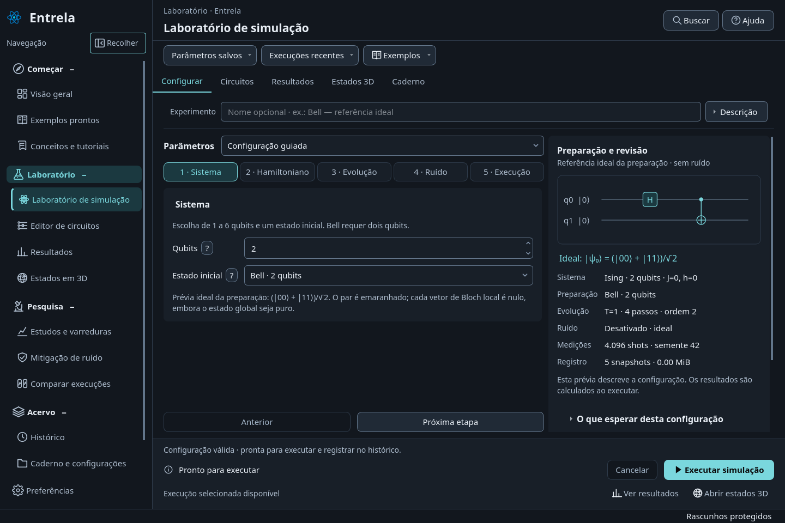

Já aplicado
Três temas, cores personalizáveis, painéis mais discretos, menos títulos repetidos e métricas que se reorganizam conforme o espaço.
Compare as telas reais do aplicativo. Grafite é o padrão; Claro científico e Azul escuro ficam disponíveis em Preferências.
Esta galeria consulta imagens locais. A mudança abaixo serve para comparar as capturas; as preferências do aplicativo são independentes.

Três temas, cores personalizáveis, painéis mais discretos, menos títulos repetidos e métricas que se reorganizam conforme o espaço.
Mais espaço para a cena 3D e gráficos, câmera e detalhes melhor agrupados e acesso mais consistente às ações de exportação.
Além das opções atuais, priorizar lembrar a disposição dos painéis, restaurar o espaço de trabalho e ajustar o grau de ajuda contextual.